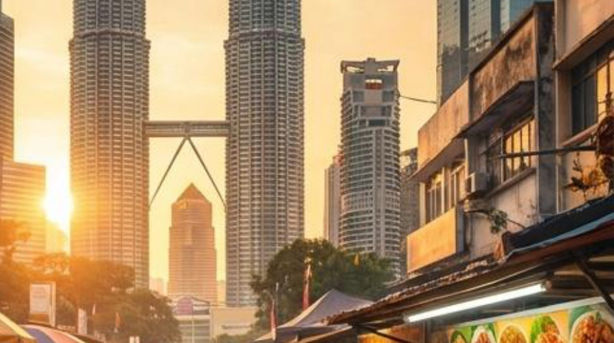

2026年 マレーシア・クアラルンプール マーケット調査レポート
Z世代の「二次元消費」と「二極化する財布」から読み解く、EC/BtoB配信戦略

調査概要：3つのテーマを横断する、変革期のクアラルンプール消費現場
調査目的：EC/IT業界クライアント向け「マレーシア市場配信戦略レポート」作成のための一次情報収集。①日本エンタメ・特撮コンテンツへのニーズ調査 ②飲食トレンド調査 ③ITトレンド調査の3部構成。
調査対象エリア：クアラルンプール市内 Bukit Bintang／KLCC／Mont Kiara
調査対象：現地マレーシア人若年層（エンタメ・アニメ・特撮ファン層）／現地富裕層・中間層・外国人駐在員（飲食消費）／現地IT・EC企業のデジタルマーケティング動向
調査日程：2026年6月17日〜6月27日（現地ヒアリング実施日：6月19日・6月23日）
調査手法：フィールドワーク（実店舗の定点観察）、現地協力者2名への対面ヒアリング、SNS（Facebook/X/Instagram）分析、デスクリサーチ。
Key Finding：「若年層＝親日エンタメ好き」「多民族国家＝価格が読みにくい」という先入観を覆す、宗教的配慮とデジタル二極化という2つの実態を確認。
3つの調査から共通して見えた、マレーシア市場攻略の本質
01. 「信仰」を前提とした設計の必須化
ハラル対応・ノンアルコール・宗教的配慮は「加点要素」ではなく「参加資格」。飲食・エンタメ・EC全領域に共通する前提条件です。マレーシア人口の約63%がムスリムであり、後付けの対応では手遅れになります。
02. 経済圏の二極化（Polarization）
富裕層・外国人駐在員向けの高単価市場と、ローカル層向けの低価格・高頻度市場に完全分断。中間価格帯は失敗しやすい「デスバレー」となっており、狙う客層を明確にしたセグメント戦略が求められます。
03. デジタルネイティブ層の"コンテンツ経由"消費
Z世代の購買導線は「広告」ではなく「TikTok Shop等のライブコマース」「推し活・ファンダム」経由に移行。静的なバナー広告への出稿だけでは、成長領域を取りこぼします。
Part 1｜日本エンタメ・特撮コンテンツ需要——ニッチではない、東南アジア最大級のACGカルチャー
マレーシア最大・最長寿のACGコンベンション「Comic Fiesta」（2002年〜）は2025年12月開催で約75,000人が来場し過去最多を記録。2011年の15,000人から10年強で5倍に拡大しており、単発のオタクイベントではなく"再現性のある集客装置"として定着しています。
特撮コンテンツはマレーシアで1980年代のTV放送を土台に浸透し、2016年のSNSコミュニティ形成（Facebook「Tokusatsu Malaysia」約24,000いいね）、2024〜2025年の「仮面ライダー50周年展」（東南アジア初開催・KL・Bukit Bintang）へとつながる、40年以上の放送史という土台があります。須賀川市の特撮コンテンツへの関心は"新規開拓"ではなく"すでにある土壌への接続"であり、40代以上の親世代も含めた「親子2世代マーケティング」が有効です。
続きはレポート購入で読めます
フルレポート（PDF）には、消費者の熱量グラデーション分析、オタク経済参入のインサイト、Part2飲食トレンド（Sushi King・ノマドカフェのケーススタディ）、Part3 EC/デジタルマーケティング動向（Shopee/TikTok Shop勢力図）、市場攻略のアクションプラン、EC企業向けチェックリストを収録しています。
フルレポートの内容
- 調査概要：3つのテーマを横断する消費現場
- マレーシア市場攻略の本質（3つの共通トレンド）
- Part1：日本エンタメ・特撮コンテンツ需要レポート（消費者の熱量グラデーション／オタク経済参入インサイト）
- Part2：飲食トレンドレポート（クアラルンプール飲食市場の勢力図／Sushi King・ノマドカフェのケーススタディ）
- Part3：ITトレンド・デジタルマーケティングレポート（Shopee/Lazada/TikTok Shop勢力図／ライブコマース動向）
- 市場攻略のアクションプラン：3つの提言
- EC企業向けチェックリスト・エリア別競合マップ・現地ヒアリング全文書き起こし
- 引用・参考文献一覧
決済は Stripe を利用しています。購入後、PDF ダウンロードリンクが表示されます。